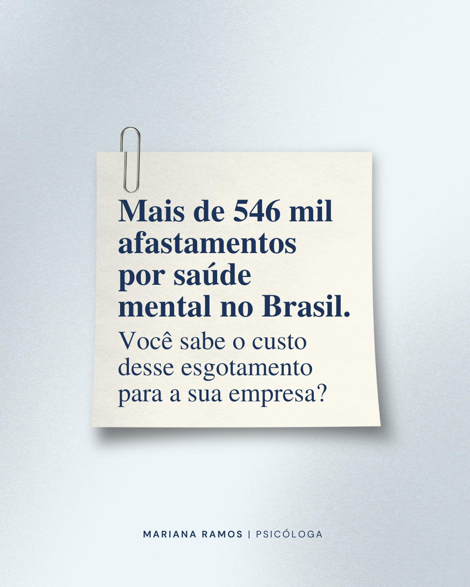
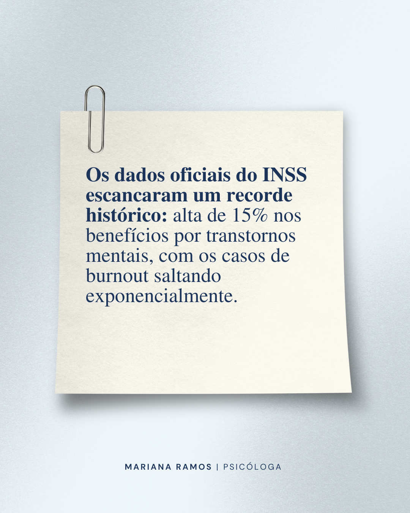
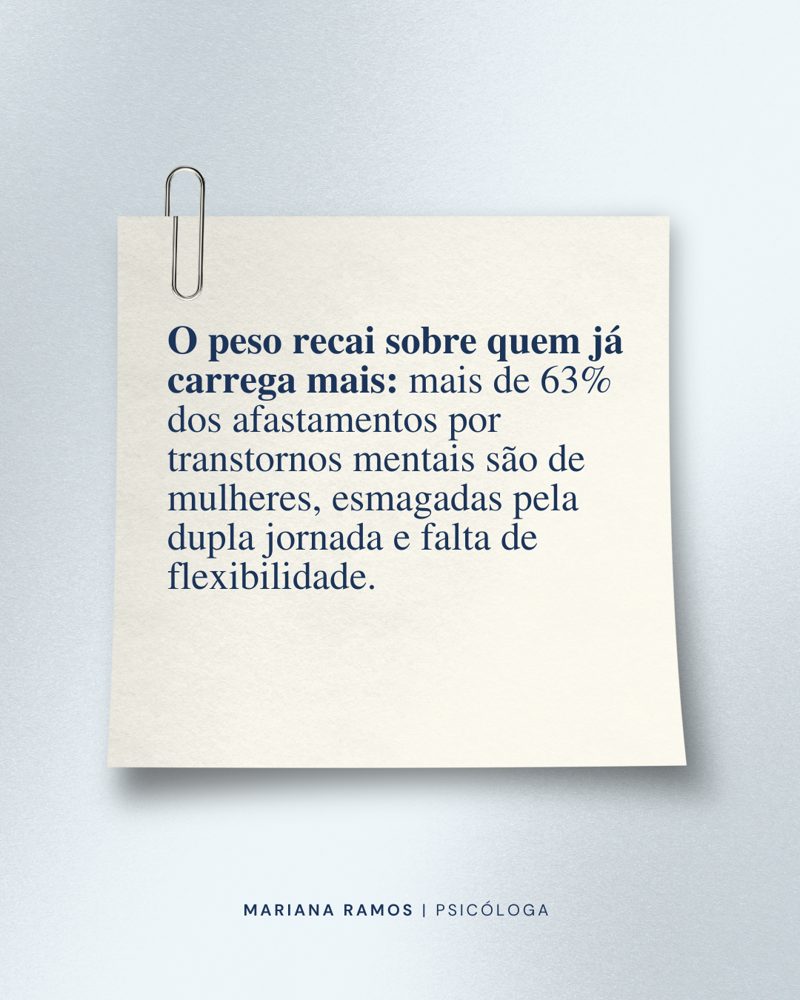
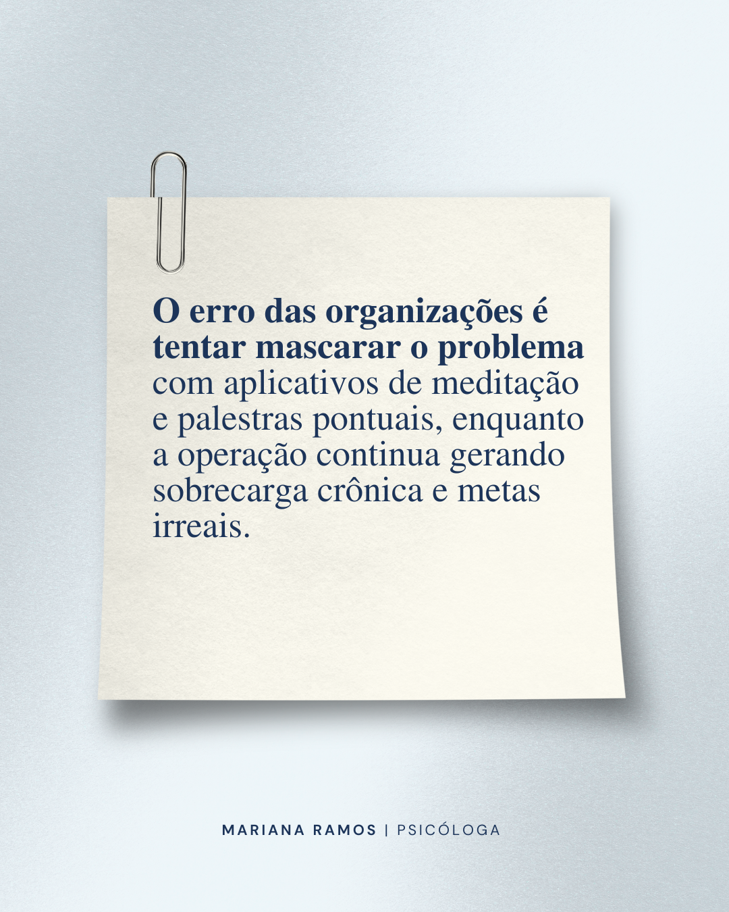
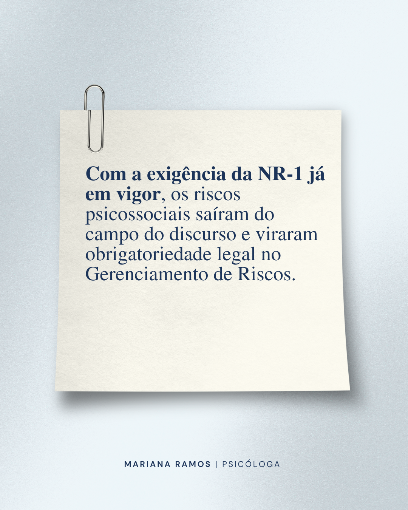
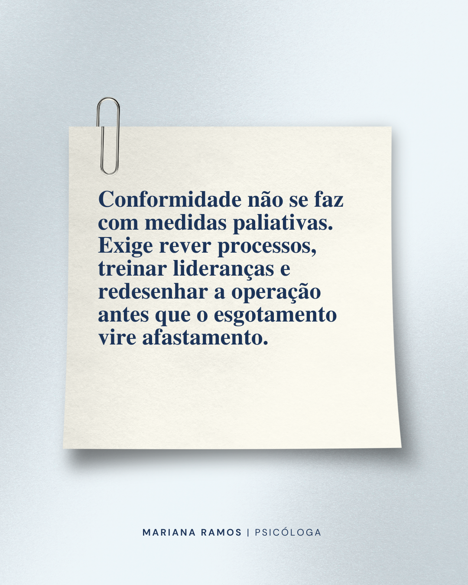

01 ⭑ Desenvolvendo o Conceito
Crio ideias e conceitos visuais perfeitamente alinhados ao direcionamento estratégico da sua marca.
Portfólio de Estratégia Digital, Conteúdo & IA Generativa
Estrategista Digital ⛧ Creative Content
✦ Transformando marcas em comunidades e dados em histórias inesquecíveis ✦

Estrategista Digital ⛧ Creative Content
Sou Engenheira de Produção, graduanda em Sistemas de Informação e apaixonada pela arte de criar. Minha atuação como Estrategista Digital e Social Media é uma verdadeira alquimia: combino o rigor da gestão de processos com a criatividade de narrativas envolventes. Utilizo ferramentas avançadas de IA Generativa para transmutar dados e ideias em conteúdos de alto impacto, garantindo posicionamento forte e resultados reais para escritórios, clínicas e especialistas.
✦ Santuário: Guarapari, ES/BR ✦
✦ Toque para visualizar cada magia:

Direcionamento Estratégico:
Utilizar a psicoeducação como pilar de atração para um público engajado em saúde mental e acolhimento humano. Construir autoridade clínica com sensibilidade e humanização do perfil profissional.
Direcionamento Visual & Estético:
• Slide 1 (Capa): Retrato autoral e humanizado da especialista para transmitir credibilidade e proximidade instantânea.
• Slides 2 a 6: Imagens conceituais traduzindo visualmente a carga emocional de cada fase, acompanhadas de microcopys enxutas e empáticas.
O luto transforma a forma como habitamos o mundo. A nossa mente precisa atravessar caminhos delicados e dolorosos para conseguir processar uma ausência — e não existe um tempo "certo" ou linear para que isso aconteça.
Se você está atravessando esse processo hoje, não se cobre perfeição ou apressamento. Acolher cada fase faz parte da sua reconstrução. 🤍
Em qual desses estágios do carrossel a sua mente tem buscado processar os sentimentos ultimamente?
Nota: Este conteúdo possui caráter estritamente educativo e preventivo. Ele não substitui a avaliação clínica e o acompanhamento psicológico individualizado.
Mariana Ramos · Psicóloga Clínica (TCC)
CRP 12/09115 · Atendimentos online e presenciais.


.png)
Direcionamento Estratégico:
Usar psicoeducação psiquiátrica para acolher pacientes, gerar salvamentos recorrentes e posicionar o post como um guia de consulta para momentos de frustração com o tratamento.
Direcionamento Visual & Estético:
Carrossel com estética outonal em tom acolhedor (estilo POV aéreo). Tipografia minimalista em tons claros, capa chamativa, slides de conteúdo direto e fechamento voltado para incentivar o salvamento.
Tomar a medicação corretamente e ainda não sentir a melhora esperada gera frustração, mas isso não significa que o tratamento falhou.
Muitas vezes, a resposta não está apenas em trocar o remédio, mas em compreender o que realmente está sustentando o sofrimento e qual é o papel de cada estratégia terapêutica no seu caso. Deslize para o lado para entender os fatores que influenciam essa evolução.
⚠ Se você sente que seu tratamento não está trazendo o resultado esperado, não interrompa o medicamento nem altere a dose por conta própria. Converse com seu psiquiatra para que a situação seja reavaliada com segurança.
Dra. Marina Mattei · Médica Psiquiatra
CRM-SC 40.650 | RQE 28.987
.png)
.png)
.png)
.png)
.png)

Direcionamento Estratégico:
Expor o custo de se apegar ao passado e demonstrar como a Terapia de Choque auxilia a superar o sofrimento para gerar conversas no direct.
Direcionamento Audiovisual:
Tweet fundo preto com legendas dinâmicas de alta retenção.
Enquanto você continuar alimentando a mágoa e usando o passado como escudo, a sua vida não avança.
A Terapia de Choque existe justamente para cortar isso pela raiz. Sem rodeios e sem passar a mão na cabeça, o objetivo é te dar o choque de realidade necessário para quebrar esse padrão de repetição.
Se você reconhece que precisa de ajuda profissional para sair desse lugar e quer entender como funciona o meu atendimento, me manda uma mensagem no direct para eu te explicar como a Terapia de Choque vai te ajudar a superar esse momento.
Reprodução: reflectingonlifee
Simone Seemann | Psicóloga | Consteladora Familiar

Direcionamento Estratégico:
Utilizar a analogia da arte clássica para atrair um público interessado em posicionamento de alto padrão, imagem de autoridade e retratos corporativos de alto valor percebido.
Direcionamento Visual & Estético:
Post estático único com imagem de arte clássica renascentista e tipografia minimalista clara sobreposta, mantendo uma estética refinada, imersiva e sofisticada.
Leonardo da Vinci dedicava anos à técnica porque entendia que um retrato não serve para disfarçar o ser humano, mas para revelar sua essência e maturidade.
Quando um trabalho é construído com técnica refinada, profundidade e intenção, o resultado não é passageiro. Ele se torna atemporal e relevante.
O cliente de alto padrão percebe a inconsistência no primeiro segundo. E quando a sua imagem transmite dúvida, você perde o negócio antes mesmo de abrir a boca.
Sua imagem precisa acompanhar a maturidade do negócio que você construiu. O resto é só disfarce.
Mac Frois | Retratista Estratégico

Direcionamento Estratégico:
Utilizar os dados oficiais de afastamento do INSS e a obrigatoriedade da NR-1 para defender que a saúde mental corporativa não se resolve com benefícios superficiais, mas com a reestruturação da gestão e da carga de trabalho.
Direcionamento Visual & Estético:
Carrossel padrão corporativo otimizado para o LinkedIn, combinando dados estatísticos de impacto e clareza visual analítica.
O Ministério da Previdência Social registrou 546.254 afastamentos do trabalho por transtornos mentais, o que representa um recorde histórico e uma alta de 15% em comparação ao período anterior. Ansiedade e depressão lideram essas licenças médicas, enquanto os registros específicos de Síndrome de Burnout saltaram de forma expressiva.
O que mais chama atenção nos dados é que mais de 63% dessas concessões recaem sobre mulheres, refletindo o peso do acúmulo de responsabilidades e de estruturas corporativas que operam sem flexibilidade.
Atender no consultório me mostra os efeitos desse esgotamento na saúde humana, enquanto a prática em Desenvolvimento Organizacional revela onde o problema realmente começa: na arquitetura da gestão.
O erro comum é tentar mascarar o desgaste com aplicativos de meditação ou palestras pontuais, ignorando que o adoecimento é gerado por metas inalcançáveis e sobrecarga crônica. Com as exigências da NR-1 plenamente em vigor, os riscos psicossociais deixaram de ser uma pauta secundária e passaram a integrar as obrigações legais de compliance.
Proteger a saúde mental do trabalhador não é apenas um cuidado humanitário, é uma exigência de governança e prevenção de passivos trabalhistas.
Sua empresa já está estruturando a gestão desses riscos de forma técnica antes que a fiscalização cobre essa postura?
Mariana Ramos
Psicóloga Clínica (TCC) | CRP 12/09115
Consultora em Desenvolvimento Organizacional & NR-1






Direcionamento Estratégico:
Utilizar um vídeo no formato trend de humor para capturar novos seguidores no topo de funil e quebrar a barreira da formalidade na arquitetura.
Direcionamento Audiovisual:
Utilizar fonte padrão da cliente e usar para a capa um take que não mostre muito os braços e/ou barriga/costas.
Começar uma obra sempre dá um frio na barriga. Vem aquele medo de que o projeto demore pra ser entregue, que o serviço fique muito caro, que ocorram erros técnicos, enfim, além de bater aquela insegurança se o profissional realmente vai entender e entregar o que você pensou.
Esse é o meu cenário de trabalho! Unindo gestão técnica com tecnologia de produção, eu garanto a entrega de móveis com encaixes perfeitos e zero surpresas na sua obra.
A lista de coisas para fazer tem 10 passos, mas o primeiro é o mais fácil: me contratar e deixar o resto comigo. Se você busca esse nível de cuidado e deseja um acompanhamento presencial em todas as fases do seu projeto, me envia uma mensagem no direct.
Luciani Toffoli | Arquiteta Urbanista

Direcionamento Estratégico:
Usar um assunto em alta dentro do nicho da cliente para gerar alcance rápido e atração de um público amplo, direcionando essa atenção imediata para a dor que a cliente resolve.
Direcionamento Design:
Utilizar fonte padrão da cliente com matéria na caixa de texto e headline: ChatGPT ilimitado: você sabe como isso impacta o seu negócio?
Na última quinta-feira (6), a OpenAI anunciou a liberação de conversas de texto ilimitadas e gratuitas para contas comuns e assinantes do plano Go, uma atualização baseada no modelo GPT-5.6 Luna que está sendo distribuída de forma gradativa.
Mas o que o avanço dessas ferramentas tem a ver com o seu negócio? Absolutamente tudo!
Cada vez mais, os consumidores usam a inteligência artificial pra pesquisar soluções, tirar dúvidas e encontrar negócios como o seu. Se o seu Google Business Profile (antigo Google Meu Negócio) estiver desatualizado ou mal posicionado, a sua empresa simplesmente deixa de ser recomendada por essas tecnologias.
O SEO evoluiu e se tornou o caminho pra garantir que o seu negócio apareça exatamente onde o seu cliente está procurando. O seu perfil está pronto pra essa nova era de busca?
(Fonte: TecMundo)
Lisandra Nienkoetter · Especialista em SEO

Direcionamento Estratégico:
Usar um assunto em alta dentro do nicho da cliente para gerar alcance rápido e atração de um público amplo, direcionando essa atenção imediata para a dor que a cliente resolve (vulnerabilidade emocional na adolescência e saúde mental).
Direcionamento Design:
Utilizar fonte padrão da cliente com o gancho da pauta em destaque na caixa de texto: "O que a polêmica do Discord diz sobre a saúde mental dos jovens?"
Termina hoje o prazo para que a plataforma Discord apresente à AGU um plano de proteção e segurança, após a forte repercussão sobre casos graves de vulnerabilidade entre adolescentes.
Enquanto a discussão jurídica e tecnológica acontece, o que fica para as famílias é um alerta urgente sobre saúde mental.
Na adolescência, o cérebro ainda está desenvolvendo as áreas de controle de impulsos e avaliação de riscos. Isso torna os jovens mais vulneráveis a dinâmicas de isolamento digital, manipulação e busca por pertencimento em ambientes virtuais sem a devida moderação.
Sob a ótica da Terapia Cognitivo-Comportamental (TCC), entendemos que o ambiente molda pensamentos e comportamentos. Quando o espaço digital se torna um cenário de risco sem supervisão, as consequências emocionais podem ser drásticas.
O diálogo aberto, a observação de mudanças bruscas de comportamento e a construção de um ambiente seguro de escuta em casa são medidas indispensables de proteção.
Como psicóloga clínica, deixo um convite aos pais: conecte-se com seus filhos. E se vocês perderam essa conexão, não hesitem em buscar ajuda profissional!
(Fonte: GloboNews)
Mariana Ramos · Psicóloga Clínica (TCC)
CRP 12/09115 · Atendimentos online e presenciais.
Responda ao questionário abaixo para entender o momento do seu negócio e descobrir qual fórmula mágica guiará o seu ciclo lunar.
✦ Escolha qual ferramenta mística você deseja consultar agora:
Escolha uma carta para revelar a previsão e o conselho para a sua marca:
✦ É assim que a mágica acontece na prática:
Crio ideias e conceitos visuais perfeitamente alinhados ao direcionamento estratégico da sua marca.
Seleciono referências, cenários e elementos visuais que dão suporte e vida ao conceito definido.
Oriento os detalhes e acompanho a estética com precisão para a captura das suas fotos e vídeos.
Ajusto, faço a curadoria e lapido os materiais para garantir um resultado profissional, fluido e polido.
Disponibilizo o seu conteúdo pronto e otimizado para as plataformas digitais, redes e campanhas.
✴︎ Cada fio tecido ao longo do caminho — a trajetória profissional que fortaleceu minha alquimia de gestão e estratégia:
Revisão e validação editorial de copys e materiais antes do envio ao cliente, mitigando erros e garantindo alinhamento estratégico. Gestão de fluxo de ajustes via ClickUp e acompanhamento de entregas e agendamento via mLabs. Auditoria diária de publicações e mapeamento proativo de content gaps para reposição de pautas e sugestões de conteúdos.
Liderança na otimização de rotinas internas e organização de dados volumosos para tomadas de decisões rápidas. Controle orçamentário, gestão de processos e resolução ágil de problemas complexos de logística e operação.
Ampla vivência em atendimento comercial, operações logísticas e gestão de negócios/projetos.
Design & Criação: Canva, Capcut, Adobe Express, Figma, Ferramentas de IA Generativa.
Gestão & Organização: Notion, ClickUp, Trello, Jira.
Agendamento & Análise: Meta Business Suite, mLabs.
Produtividade & Análise: Google Workspace, Excel Avançado, Funis de Vendas.
✦ Deixe seu feedback, sugestão de parceria ou mensagem de conexão gravada neste livro místico!
*:⋆ Se algo aqui ressoou com você, este é o portal para conversarmos:
✦ TEMPO RESTANTE PARA A PRÓXIMA LUA CHEIA ✦
Momento ideal para manifestar grandes ideias e lançar novas estratégias...